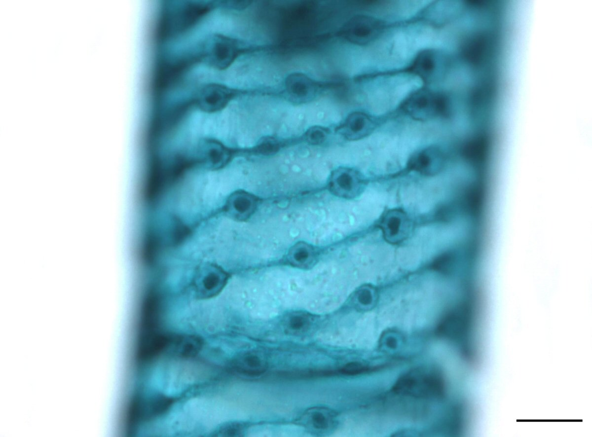
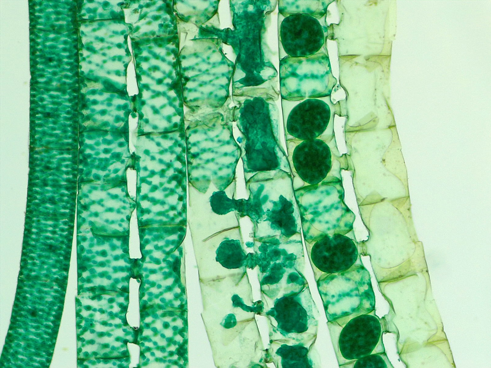
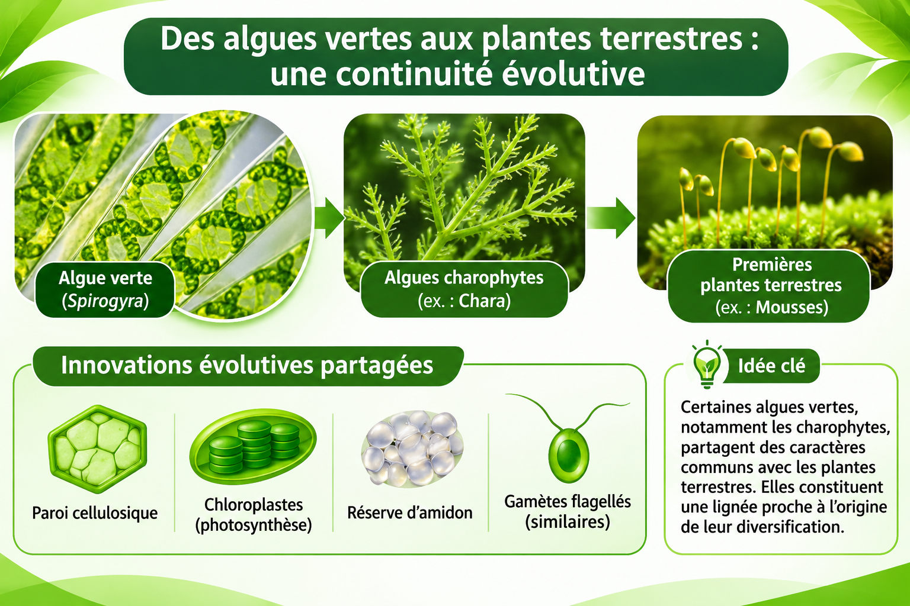

Milieu de vie
Les algues vivent principalement dans l'eau douce ou dans les milieux marins. Certaines se développent également sur des surfaces humides.
GROUPE 01 - MONDE AQUATIQUE
Des organismes photosynthétiques principalement aquatiques, présentant une grande diversité de formes et de modes de reproduction.

Observation de terrain - PlantEvo Viewer



Les algues vivent principalement dans l'eau douce ou dans les milieux marins. Certaines se développent également sur des surfaces humides.
De nombreuses algues possèdent un thalle, un appareil végétatif sans véritables racines, tiges et feuilles.
Selon les groupes, les algues peuvent se reproduire par fragmentation, par spores ou par reproduction sexuée.
La photosynthèse oxygénique est une innovation majeure de certaines lignées d'algues. Les algues vertes proches des plantes terrestres partagent avec elles plusieurs caractères évolutifs.
Les algues participent à la production de matière organique et constituent la base de nombreuses chaînes alimentaires aquatiques. Plusieurs groupes contribuent également à la production d'oxygène.